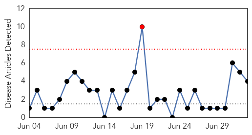
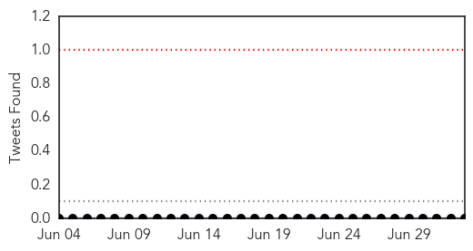
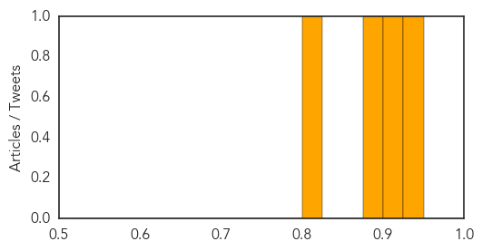
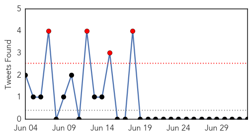
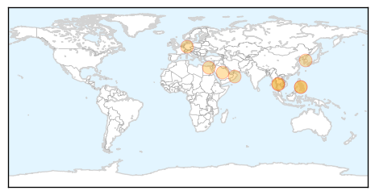

Swine Flu
30-Day Web Trend
1 alerts, 0 warnings

30-Day Twitter Trend
0 alerts, 0 warnings

Article Locations

Article Confidences
Top Articles:
Top Tweets:
-
No tweets found for Jul 03, 2015
MERS
30-Day Web Trend
2 alerts, 16 warnings

30-Day Twitter Trend
4 alerts, 0 warnings

Article Locations
Article Confidences

Top Articles:
- 0.999
- Too many unknowns stymie response to MERS
- 0.996
- Egypt reports first case of MERS virus
- 0.986
- Doctors allay fear over Mers-CoV
- 0.983
- Thai Health Ministry Declares Nation MERS-Free
- 0.981
- Thai health ministry declares nation MERS-free
- 0.976
- First-ever possible treatments for MERS
- 0.926
- Korean in Bacolod negative for MERS-CoV
- 0.922
- Pattaya briefs community leaders on MERS preparedness
- 0.911
- Top Stories
- 0.842
- Korean student cleared of MERS-Cov
Top Tweets:
-
No tweets found for Jul 03, 2015